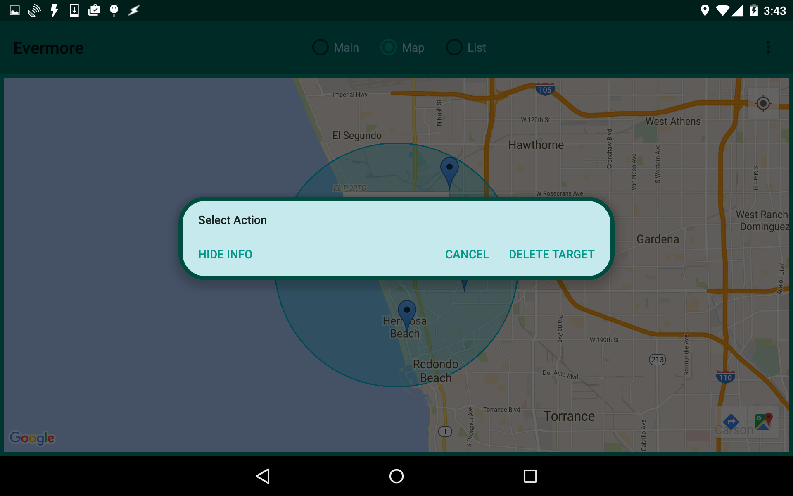
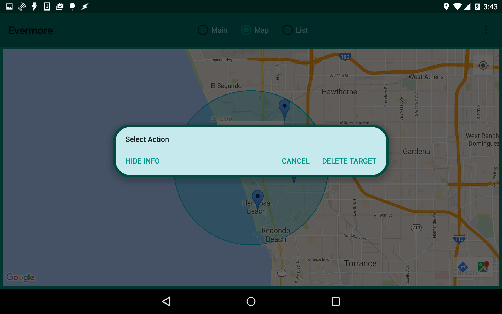
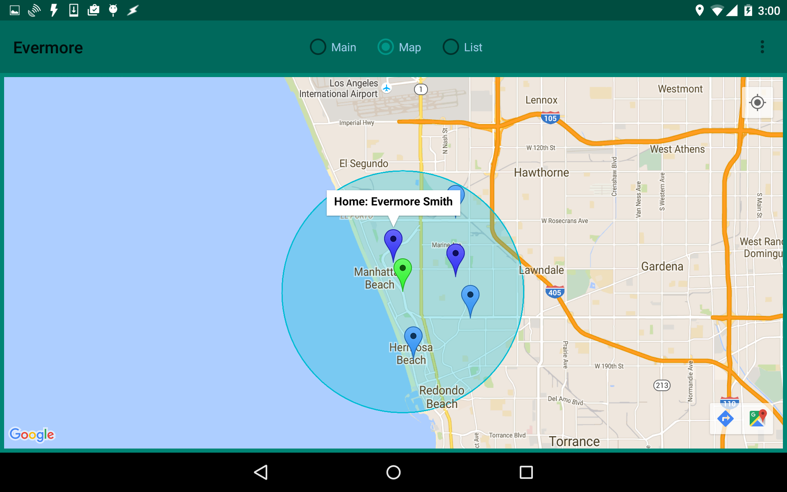
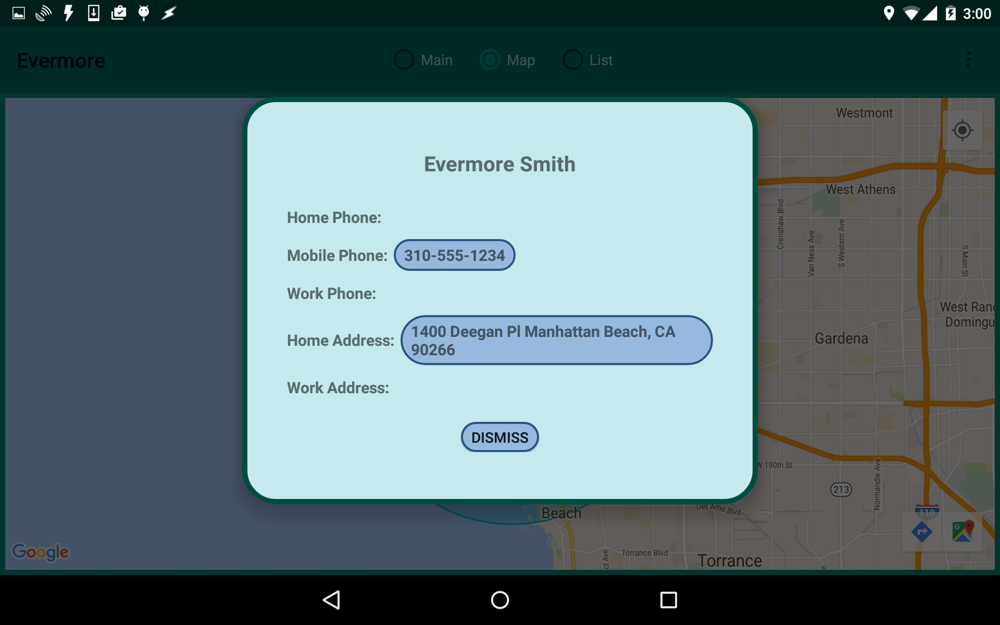
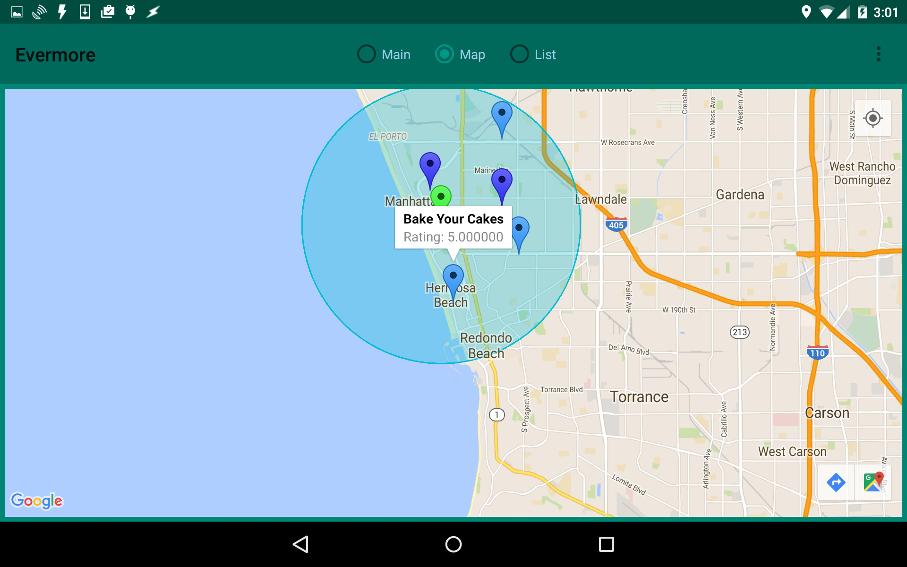
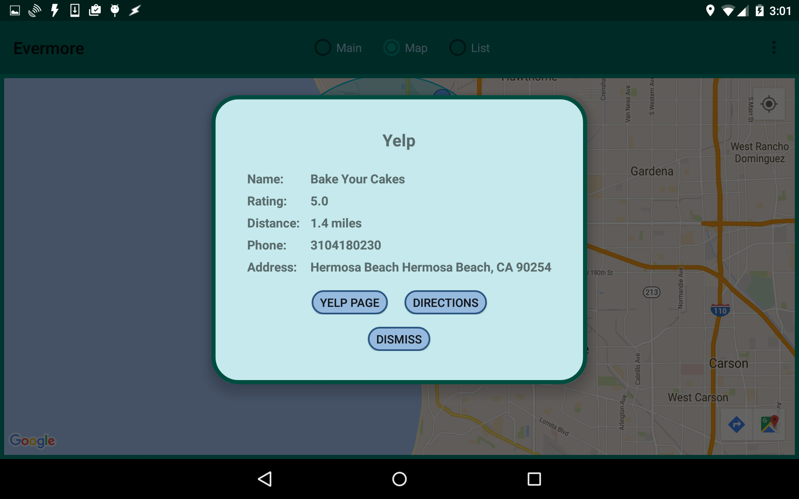

Targets
Clicking on a Target will bring up a small popup which will allow you to delete the Target from the screen. Any Darts related to the Target will remain. This currently only works for manual Targets (i.e., Targets you have created by clicking on the map).
 

Darts
Clicking on a Dart will bring up a small popup with additional information about the Dart. The type of information depends on the type of search which created the Dart.Contact Darts
Clicking on a contact Dart will bring up a small popup which will display the contact's name, along with either "Home" or "Work" to indicate the type of the address. 
Clicking on the popup itself will expand the popup to display more detailed information, such as the contact's phone numbers and addresses. Clicking on a phone number will allow you to phone the contact. Clicking on an address will bring up a Google Map for that address.Yelp Darts
Clicking on a Yelp Dart will bring up a small popup which will display the name of the business as well as its rating. 
Clicking on the popup itself will bring up additional information about the business. Clicking on "Yelp Page" will bring up the full Yelp page for the business. Clicking on "Directions" will bring up a Google Map to that business.